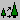

The VDYP Format Table approximates interactive VDYP output. For Batch VDYP output, see Timber Supply Format Tables.
When requesting this table, users must select two types of volume to be reported using the Merchantability Limits dialogue box.
VDYP |
TIPSY Equivalent |
Whole stem |
Total Standing |
Close utilization |
Merchantable |
Close utilization net decay |
N/A |
Close utilization net decay & waste |
N/A |
Close utilization net decay, waste and breakage |
N/A |